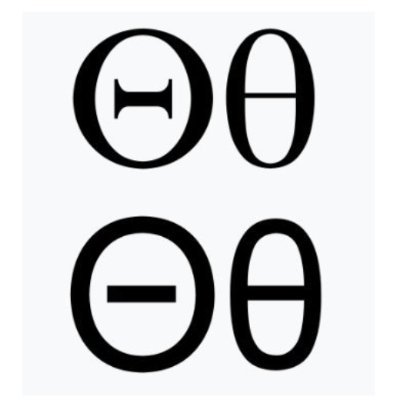

Options Lab IBKR FlexConnect your Interactive Brokers account using IBKR Flex Queries to import and analyze trade history.
Trade History).XML (default).Last 365 Calendar Days (or your preferred
range).Trade History under
Activity Flex Query and click the blue i (info icon) next to
it to view and copy your numeric Query ID.